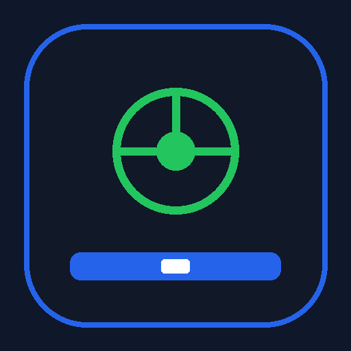

MetaDriver
Instale o aplicativo para usar da forma correta.
Instalar aplicativo
Entrar
Use o Chrome para instalar o aplicativo.
Instalação automática indisponível neste momento.
Abrir app
Como instalar
MetaDriver v11 · instalação